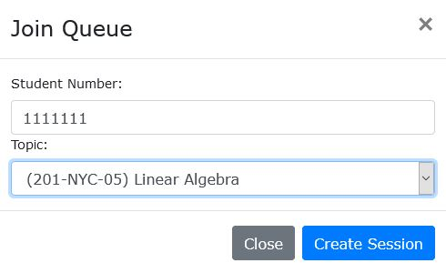

Select "Schedule" at the top right of the screen after logging in. Initially all course's schedules will be displayed. Select a course from the dropdown and that course's schedule will be displayed.

You may add additional courses to your selection that will be added to the display.
What is the main purpose of the U-Q system?
The purpose of this system is to replace the previous pen and paper system. This system seeks to automate and streamline the process of getting help at the TLC. With this system, students will enter their id and the topic they need help with and the system then tracks the time they have waited in the lineup, how long they have spent with the teacher, and what they needed help with.
How do I login to the system?
Fill out the login page using your valid student/teacher id and password.
How do I contact help?
In order to get further help please contact the Heritage College Computer Services.
To add yourself manually to the queue, attempt to find a device or computer the teachers have provided, teachers may also add you to their queue.
Do I have any control of the lineup?
Students may remove themselves from the lineup but that is the extent of their control over the lineup.
How is my data being used?
The only data that is saved within our system is data related to when students lineup up for help, how many students lineup up for help, their student numbers, and what topic they needed help with.
Where can I find my student id?
Your student id is displayed in your academic schedule on Omnivox.
If you are still having trouble finding your student id please consult Student Services in the college for further assistance.
After logging in you will get an option to select “Student Entry”.

Click that button and you will be taken to a screen where a student may select a subject's lineup to enter into using their student id and topic.
How do I create a schedule slot for myself?
Select "Schedule" at the top right of the screen after logging in.
Select the edit icon next to the schedule title to proceed to the edit department page.

Use the dropdown at the top left of the screen to select which teacher to schedule. Clicking on an empty schedule will place a new schedule slot where you clicked. Clicking on an existing schedule slot will remove it.

How do I start my lineup?
The lineup starts automatically after you have created a schedule slot for yourself and the time of the schedule slot arrives. Please consult the question above this one for information on how to create a schedule slot for yourself.
How do I generate a report?
After logging in click on "Report" on to the right of the screen.

Then you must enter the two dates that will encompass reports. The reports will contain all queue data between these two dates.

Click on "Get Report" to see the list of reports and the new buttons, "Full Report" and "Simple Report" to download a full version of the report and a more simple version of the report respectively.
How do I create a new session in my lineup?
After logging in and setting up a schedule slot. Click on the "Create Session" button next to the "Upcoming" title.

Input the student's id and topic and click "Create Session"
.JPG)
This will add the student to the bottom of the current queue.
Why do I see a lineup open but don't have a schedule slot under my name?
All department schedule slots open lineup for each teacher in that department. The difference is what teacher will be recorded under that lineup as the system looks to the schedule when printing reports for that queue.